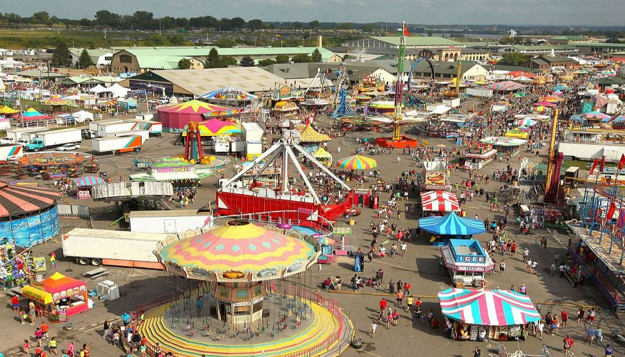
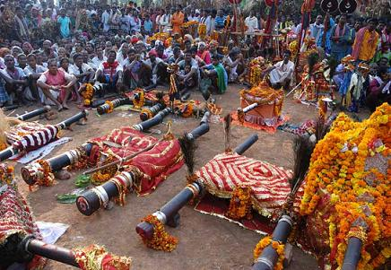

ü™î Fairs and Festivals of Madhya Pradesh ‚Äì A Celebration of Culture and Tradition üéâ
üõï 1. Religious Festivals üåü
Holi in Bundelkhand & Malwa – Known for Lathmar Holi and grand community celebrations.
Mahashivratri (Ujjain & Omkareshwar) – Grand celebrations at Mahakaleshwar & Omkareshwar Jyotirlingas.

Kumbh Mela (Ujjain) – Held every 12 years, one of the largest religious gatherings in the world.
Navratri & Dussehra (Chitrakoot, Jabalpur, Ujjain) – Marked by Ramleelas, Durga Puja, and grand processions.
üèá2. Famous Fairs:
Nagaji Fair (Porsa, Morena) – A large cattle fair attracting traders from across India.

Bhagoria Festival (Jhabua & Alirajpur) – A unique tribal festival where young people choose their life partners.
Chethiyagiri Vihara Festival (Sanchi) – A Buddhist festival celebrating the relics of Arhat Sariputta and Mahamoggalana.


Madai Festival (Bastar & Mandla) – A Gond tribal fair dedicated to their deities, featuring rituals, dances, and fairs.
üéä 3. Other Major Festivals üå∏üåû
Khajuraho Dance Festival (February, Khajuraho) – A grand classical dance celebration against the backdrop of UNESCO-listed temples.
Lokrang Festival (January, Bhopal) – A showcase of folk dances, tribal art, and music from across India.

Tansen Music Festival (December, Gwalior) – A tribute to Tansen, one of India's greatest classical musicians.
Akhil Bhartiya Kalidas Samaroh (November, Ujjain) – A literary and cultural festival celebrating poet Kalidasa.